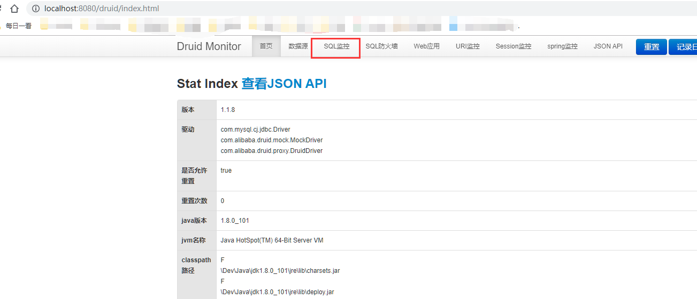
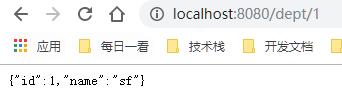
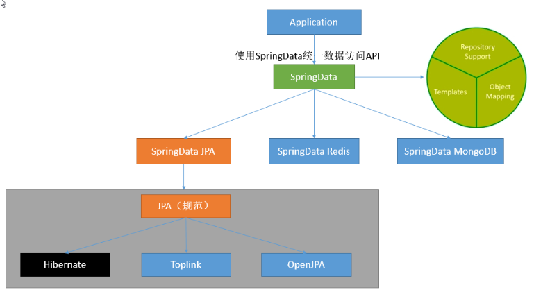

前边我们已经学些了开发的基本流程，最重要的一步来了，怎么样和数据库交互才是最重要的，毕竟没有数据那就相当于什么也没做，本文我们来学习使用springboot整合jdbc、mybatis、jpa等我们常用的数据库持久化技术。
整合jdbc我们需要两个依赖，一个是starter依赖，一个是mysql驱动（访问数据库驱动肯定是比不可少的），starter中我们指定了要使用的数据源。
1 <dependency>
2 <groupId>org.springframework.boot</groupId>
3 <artifactId>spring-boot-starter-jdbc</artifactId>
4 </dependency>
5
6 <dependency>
7 <groupId>mysql</groupId>
8 <artifactId>mysql-connector-java</artifactId>
9 <scope>runtime</scope>
10 </dependency>在application.yml或者application.properties中添加配置信息：
1 spring:
2 datasource:
3 username: root
4 password: root
5 url: jdbc:mysql://localhost:3306/jdbctest?serverTimezone=UTC
6 driver-class-name: com.mysql.cj.jdbc.Driver在test中添加测试代码，来测试我们的数据库是否链接成功。
1 @Autowired
2 DataSource dataSource;
3
4 //....
5 @Test
6 public void jdbcTest() {
7 System.out.println(dataSource.getClass());
8 try {
9 System.out.println(dataSource.getConnection());
10 } catch (SQLException e) {
11 e.printStackTrace();
12 }
13 }springboot整个jdbc，默认使用的是org.apache.tomcat.jdbc.pool.DataSource作为数据源，据源的相关配置都在DataSourceProperties里面。jdbc的自动配置原理在org.springframework.boot.autoconfigure.jdbc下。
添加一个aciton，使用JdbcTemplate来查询数据：
1 @Autowired
2 private JdbcTemplate jdbcTemplate;
3
4 @RequestMapping("/query")
5 public List<Map<String, Object>> query() {
6 List<Map<String, Object>> list = jdbcTemplate.queryForList("select * from `user`");
7 return list;
8 }这里我们整合Druid数据源，这是阿里巴巴的一个数据，整合之后我们可以跟踪sql日志，查询我们sql的执行情况。
1 <!--引入druid数据源-->
2 <!-- https://mvnrepository.com/artifact/com.alibaba/druid -->
3 <dependency>
4 <groupId>com.alibaba</groupId>
5 <artifactId>druid</artifactId>
6 <version>1.1.8</version>
7 </dependency>在config下添加一个配置项DruidConfig.java：
1 package com.example.demo.config;
2
3 import com.alibaba.druid.pool.DruidDataSource;
4 import com.alibaba.druid.support.http.StatViewServlet;
5 import com.alibaba.druid.support.http.WebStatFilter;
6 import org.springframework.boot.context.properties.ConfigurationProperties;
7 import org.springframework.boot.web.servlet.FilterRegistrationBean;
8 import org.springframework.boot.web.servlet.ServletRegistrationBean;
9 import org.springframework.context.annotation.Bean;
10 import org.springframework.context.annotation.Configuration;
11
12 import javax.sql.DataSource;
13 import java.util.Arrays;
14 import java.util.HashMap;
15 import java.util.Map;
16
17 @Configuration
18 public class DruidConfig {
19
20 @ConfigurationProperties(prefix = "spring.datasource")
21 @Bean
22 public DataSource druid(){
23 return new DruidDataSource();
24 }
25
26 //配置Druid的监控
27 //1、配置一个管理后台的Servlet
28 @Bean
29 public ServletRegistrationBean statViewServlet(){
30 ServletRegistrationBean bean = new ServletRegistrationBean(new StatViewServlet(), "/druid/*");
31 Map<String,String> initParams = new HashMap<>();
32
33 initParams.put("loginUsername","admin");
34 initParams.put("loginPassword","123456");
35 initParams.put("allow","");//默认就是允许所有访问
36 initParams.put("deny","192.168.15.21");
37
38 bean.setInitParameters(initParams);
39 return bean;
40 }
41
42
43 //2、配置一个web监控的filter
44 @Bean
45 public FilterRegistrationBean webStatFilter(){
46 FilterRegistrationBean bean = new FilterRegistrationBean();
47 bean.setFilter(new WebStatFilter());
48
49 Map<String,String> initParams = new HashMap<>();
50 initParams.put("exclusions","*.js,*.css,/druid/*");
51
52 bean.setInitParameters(initParams);
53
54 bean.setUrlPatterns(Arrays.asList("/*"));
55
56 return bean;
57 }
58 }其中statViewServlet是数据库管理后台，便于我们查看数据sql监控，webStatFilter添加一个过滤来使Druid知道哪些请求（附带sql查询的请求）需要捕获到，以便于记录sql日志。
但是Druid后台默认使用的日志框架是log4j，和当前版本你的springboot的日志框架不一样，直接启动会报错，需要再添加一个依赖。参考：https://blog.csdn.net/lyn_kk/article/details/89086476
1 <dependency>
2 <groupId>org.slf4j</groupId>
3 <artifactId>slf4j-log4j12</artifactId>
4 </dependency>在yml添加Druid数据源额外的参数：
1 spring:
2 datasource:
3 username: root
4 password: root
5 url: jdbc:mysql://localhost:3306/jdbctest?serverTimezone=UTC&useSSL=false
6 driver-class-name: com.mysql.cj.jdbc.Driver
7
8 #Druid数据源特有的配置
9 initialSize: 5
10 minIdle: 5
11 maxActive: 20
12 maxWait: 60000
13 timeBetweenEvictionRunsMillis: 60000
14 minEvictableIdleTimeMillis: 300000
15 validationQuery: SELECT 1 FROM DUAL
16 testWhileIdle: true
17 testOnBorrow: false
18 testOnReturn: false
19 poolPreparedStatements: true
20 # 配置监控统计拦截的filters，去掉后监控界面sql无法统计，'wall'用于防火墙
21 filters: stat,wall,log4j
22 maxPoolPreparedStatementPerConnectionSize: 20
23 useGlobalDataSourceStat: true
24 connectionProperties: druid.stat.mergeSql=true;druid.stat.slowSqlMillis=500启动访问 http://localhost:8080/druid/index.html可以登录sql管理后台来查看监控，当我们访问一次数据库就会有一次监控。

前边我们已经整个了jdbc和druid数据源，下面我们就来使用一个操作数据库的框架，我们之前所熟悉的mybatis也整合进来。
接上边的依赖配置，我们添加mybatis的依赖：
1 <!--引入mybatis-->
2 <dependency>
3 <groupId>org.mybatis.spring.boot</groupId>
4 <artifactId>mybatis-spring-boot-starter</artifactId>
5 <version>1.3.1</version>
6 </dependency> 1 package com.example.demo.mapper;
2
3 import com.example.demo.domain.Department;
4 import org.apache.ibatis.annotations.Mapper;
5 import org.apache.ibatis.annotations.Select;
6
7 import java.util.List;
8
9
10 @Mapper
11 public interface DepartmentMapper {
12
13 @Select("select * from department")
14 List<Department> getAll();
15
16 @Select("select * from department where id=#{id}")
17 Department getById(Integer id);
18
19 }添加对应的实体：
1 public class Department {
2 private Integer id;
3 private String name;
4
5 public Integer getId() {
6 return id;
7 }
8
9 public void setId(Integer id) {
10 this.id = id;
11 }
12
13 public String getName() {
14 return name;
15 }
16
17 public void setName(String name) {
18 this.name = name;
19 }
20
21 public Department() {
22
23 }
24
25 public Department(Integer id, String name) {
26 this.id = id;
27 this.name = name;
28 }
29
30 @Override
31 public String toString() {
32 return "Department{" +
33 "id=" + id +
34 ", name='" + name + '\'' +
35 '}';
36 }
37 }@RestController
@RequestMapping("/dept")
public class DepartmentController {
@Autowired
DepartmentMapper departmentMapper;
@GetMapping("list")
public Object getAll(){
return departmentMapper.getAll();
}
@GetMapping("{id}")
public Object getById(@PathVariable("id") Integer id){
return departmentMapper.getById(id);
}
}访问地址：http://localhost:8080/dept/1

使用@MapperScan注解指定包名，可以把该包下边的所有类注册为Mapper，使我们不用再每个类型写注解@Mapper。
1 //使用MapperScan批量扫描所有的Mapper接口；
2 @MapperScan(value = "com.example.demo.mapper")
3 @SpringBootApplication
4 public class DemoApplication {
5
6 public static void main(String[] args) {
7 SpringApplication.run(DemoApplication.class, args);
8 }
9
10 }我们可以在类路径下添加传统的mybatis配置文件，并在application.yml添加如下配置就可以实现配置文件方式的mybatis。
mybatis:
config-location: classpath:mybatis/mybatis-config.xml 指定全局配置文件的位置
mapper-locations: classpath:mybatis/mapper/*.xml 指定sql映射文件的位置JPA(Java Persistence API)是Sun官方提出的Java持久化规范. 为Java开发人员提供了一种对象/关联映射工具来管理Java应用中的关系数据. 它的出现是为了简化现有的持久化开发工作和整合ORM技术. 结束各个ORM框架各自为营的局面。
JPA仅仅是一套规范,不是一套产品, 也就是说Hibernate, TopLink等是实现了JPA规范的一套产品。
Spring Data JPA是Spring基于ORM框架、JPA规范的基础上封装的一套JPA应用框架,是基于Hibernate之上构建的JPA使用解决方案,用极简的代码实现了对数据库的访问和操作,包括了增、删、改、查等在内的常用功能。
除此之外还有SpringData Redis、SpringData MongoDb。

1 <!--整合jdbc-->
2 <dependency>
3 <groupId>org.springframework.boot</groupId>
4 <artifactId>spring-boot-starter-jdbc</artifactId>
5 </dependency>
6 <dependency>
7 <groupId>mysql</groupId>
8 <artifactId>mysql-connector-java</artifactId>
9 <scope>runtime</scope>
10 </dependency>
11
12
13 <!--引入springdata jpa-->
14 <dependency>
15 <groupId>org.springframework.boot</groupId>
16 <artifactId>spring-boot-starter-data-jpa</artifactId>
17 </dependency>其中前两个都是访问数据库不可缺少的依赖，在整合mybatis的时候也有。
添加一个User类，添加相应注解，SpringData JPA会自动生成到数据库表。
1 package com.example.demo.domain;
2
3 import javax.persistence.*;
4
5 @Entity
6 public class User {
7
8 @Id //表名这是一个主键
9 @Column() //是数据库中的列，默认不写把属性名自动作为列，使用注解可以指定列明
10 @GeneratedValue(strategy = GenerationType.IDENTITY) //主键自增
11 private Integer id;
12
13 @Column(name = "user_name",length = 50) //这是和数据表对应的一个列
14 private String name;
15
16 private String email;
17
18 public String getEmail() {
19 return email;
20 }
21
22 public void setEmail(String email) {
23 this.email = email;
24 }
25
26 public Integer getId() {
27 return id;
28 }
29
30 public void setId(Integer id) {
31 this.id = id;
32 }
33
34 public String getName() {
35 return name;
36 }
37
38 public void setName(String name) {
39 this.name = name;
40 }
41 }1 package com.example.demo.repository;
2
3 import com.example.demo.domain.User;
4 import org.springframework.data.jpa.repository.JpaRepository;
5
6 public interface UserRepository extends JpaRepository<User,Integer> {
7
8 }只要继承了JpaRepository<User,Integer>就行了，里边有封装好自带的访问数据库的方法。
1 @RestController
2 public class UserController {
3
4 @Autowired
5 UserRepository userRepository;
6
7 @GetMapping("/user/{id}")
8 public User getUser(@PathVariable("id") Integer id){
9 Optional<User> optional = userRepository.findById(id);
10 return optional.get();
11 }
12
13 @GetMapping("/user")
14 public User insertUser(User user){
15 User save = userRepository.save(user);
16 return save;
17 }
18 }里边有一个插入的方法和一个获取的方法，我们可以先插入在访问获取方法。
访问：http://localhost:8080/user?name=dsff&email=526457385@qq.com来插入数据，访问：http://localhost:8080/user/1来获取数据。
以上就是springboot对数据库访问的整合了，基本上学到这里就可以完全的使用springboot进行开发了，其他的一些细节问题会开发过程中遇见的时候再进行学习就行了。